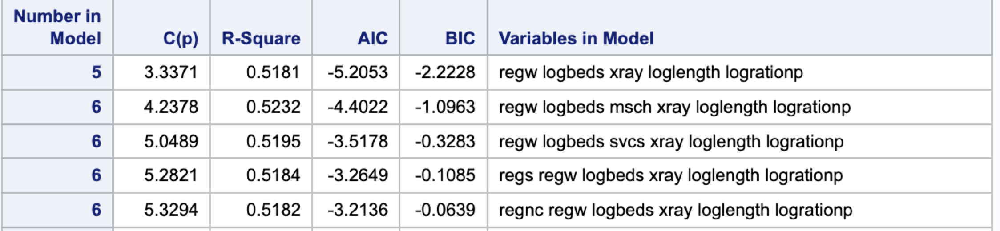
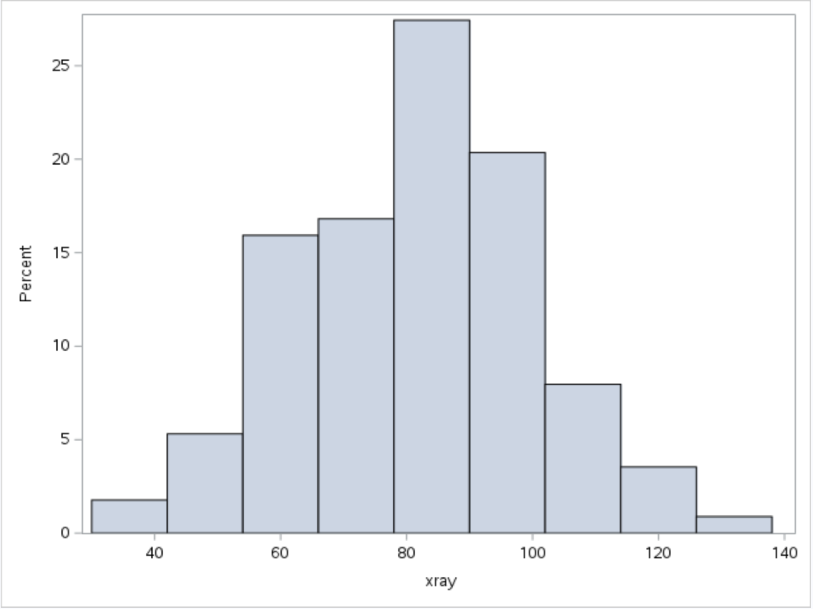

hw6
Question 1
(a) Answer:
\[\begin{align*} \hat{\beta}_{(-i)}&=(X_{(-i)}'X_{(-i)})^{-1}X_{(-i)}'Y_{(-i)}\\ &=[(X'X)^{-1}+\frac{(X'X)^{-1}x_ix_i'(X'X)^{-1}}{1-h_i}](X'Y-x_iY_i)\\ &=(X'X)^{-1}X'Y-(X'X)^{-1}x_iY_i+(\frac{(X'X)^{-1}x_ix_i'(X'X)^{-1}}{1-h_i})X'Y-(\frac{(X'X)^{-1}x_ix_i'(X'X)^{-1}}{1-h_i})x_iY_i\\ &=\hat{\beta}-\frac{(X'X)^{-1}x_iY_i}{1-h_i}+(\frac{(X'X)^{-1}x_ix_i'(X'X)^{-1}}{1-h_i})x_iY_i\\ &+(\frac{(X'X)^{-1}x_ix_i'(X'X)^{-1}}{1-h_i})X'Y-(\frac{(X'X)^{-1}x_ix_i'(X'X)^{-1}}{1-h_i})x_iY_i\\ &=\hat{\beta}-\frac{(X'X)^{-1}x_iY_i}{1-h_i}+(\frac{(X'X)^{-1}x_ix_i'(X'X)^{-1}}{1-h_i})X'Y\\ &=\hat{\beta}-\frac{(X'X)^{-1}x_iY_i}{1-h_i}+(\frac{(X'X)^{-1}x_ix_i'(X'X)^{-1}}{1-h_i})X'X\beta\\ &=\hat{\beta}-\frac{(X'X)^{-1}x_iY_i}{1-h_i}+\frac{(X'X)^{-1}x_ix_i'\beta}{1-h_i}\\ &=\hat{\beta}-\frac{(X'X)^{-1}x_i(Y_i-x_i'\beta)}{1-h_i}\\ &=\hat{\beta}-\frac{(X'X)^{-1}x_ie_i}{1-h_i} \end{align*}\](b) Answer:
\[\begin{align*} y_i-x'_{i}\hat{\beta}_{(-i)}&=y_i-x'_i(\hat{\beta}-\frac{(X'X)^{-1}x_ie_i}{1-h_i})\\ &=y_i-x'_i\hat{\beta}+\frac{x'_i(X'X)^{-1}x_ie_i}{1-h_i}\\ &=\frac{(x'_i\hat{\beta}+e_i)(1-h_i)}{1-h_i}-\frac{x'_i\hat{\beta}(1-h_i)}{1-h_i}+\frac{h_ie_i}{1-h_i}\\ &=\frac{e_i(1-h_i)}{1-h_i}+\frac{h_ie_i}{1-h_i}\\ &=\frac{e_i(1-h_i+h_i)}{1-h_i}\\ &=\frac{e_i}{1-h_i} \end{align*}\]Question 2
(a) Answer:
Figure 1:
By observing Figure 1, we detect ids in red have high influence to the model. The size of the circle corresponds to the quantity of cook’s D. The x axis is the leverage and y axis is the studentized residuals.
In general, here are the ids with unusual leverage, residual, cook’s D:
leverage: 112, 104
residual: 47, 33, 43, 54
cook’s D: 47, 112
(b) Answer:
Figure 2: id vs Cook’s D
Figure 3: Studentized Residual without current observation vs Leverage
Figure 4: xray vs loglength
Figure 5: census vs loglength
Figure 6: age vs loglength
By observing Figure 2, we can see hospital with id 47 and id 112 have the highest cook’s id. By observing Figure 3, we can see hospital with id 47 has the highest studentized residual and id 112 have the highest leverage. By observing figure 4, 5 and 6, we can see hospital with id 47 and id 112 seem to be outliers. They have very high loglength compared to observation with same level of independent variables. The usual loglength of these two hospitals make them potentially influential.
(c) Answer:
Figure 7: Reduced Observation Model measures
Figure 8: Full Observation Model measures

Comparing Figure 7 and Figure 8, the regression parameter estimates in the reduced observation model are smaller than the regression parameter estimates in the full observation model. The p value for predict age has a big shift from 0.0072 (Figure 8) to 0.0385 (Figure 7). The statistical significance of predictor age in the model is waned after reducing the observations. The p values for overall F tests in both models remain the same. The root MSE in reduced observation model is smaller than that in full observation model which indicate the performance of the model improved after removing the outliers.
(d) Answer:
Figure 9: Final model Result
Figure 9 is the result of the final model. I applied a log transformation on census after observing the component-plus-residual plots for each of the predictor. The numeric and graphic outputs generated in the procedure are displayed in Appendix.
Question 3
Answer:
Figure 10: Table listing top 5 models and selection criteria

I break the variable region to dummy variable (regw, regnc, regs). I applied log transformation on length, beds and ratio/census after observing positive right skewness in their distributions (Note that I name this variable as rationp to avoid containing dash in my variable name). The original distribution of predictors are displayed in Appendix.
From the result displayed in Figure 10, we can see the 5 predictors model containing regw, logbeds, xray, loglength, logrationp are ranked as the top 1 among many subsets. These five predictors appear to be in each of the subset among the top 5 subsets. The top 1 model has the lowest AIC, BIC, and C(p) measures but \(R^2\) in the second model outruns the top 1 model by 0.51.
Appendix
Appendix Table 1: Parameters used to build partial residuals in question 2d
Appendix Graph 1: Component-plus-residual plot for xray in question 2d

Appendix Graph 2: Component-plus-residual plot for census in question 2d
Appendix Graph 3: Component-plus-residual plot for age in question 2d
Appendix Graph 4: Histogram of beds in question 3b
Appendix Graph 5: Histogram of svcs in question 3b
Appendix Graph 6: Histogram of msch in question 3b
Appendix Graph 7: Histogram of xray in question 3b

Appendix Graph 8: Histogram of length in question 3b
Appendix Graph 9: Histogram of nurse/patient ratio